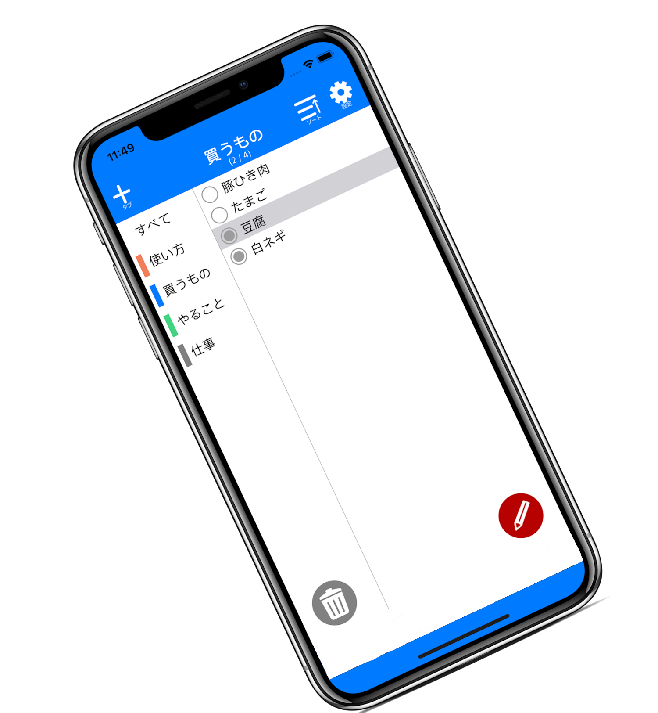
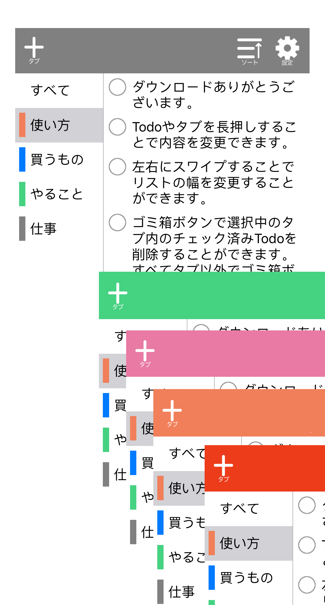

Todotabでシンプルな生活を
TodotabはTodoをタブ管理できるTodoリストアプリです。
アラーム設定などの基本的な機能からタブの色付けなど多彩な操作ができます。



Todotabの特徴
- Todoにアラーム設定ができる！
- テーマカラーを選べる！
- タブに色付けができる！
主な機能
- ToDo登録機能（Todoを登録できます。）
- タブ登録機能（タブを登録できます。登録時には好きなタブ色を設定することもできます。）
- ToDoタブ分け機能（ToDoは１つでも複数のタブにでも登録できます。ToDoはラベルのような考え方でタブに所属します。）
- 通知機能（指定時間に通知してくれます。）
- メモ機能（ToDoにメモを設定するとToDoの下に小さく表示されます。）
- ソート機能（自分で好きな順序にToDoを入れ替えることができます。）
- テーマカラー設定機能（気分に合わせてテーマカラーを設定することができます。）
- ToDo表示幅変更機能（ToDoの表示に集中したい場合はタブ表示欄の幅を狭くしてToDo欄の幅を広げて表示できます。）
- チェック済み削除機能（完了したToDoを一括削除できます。）
- 全てのToDo表示機能（登録されている全てのToDoを表示することができるタブが用意されています。）